Status Page
What is a Status Page?
One of the core principles of SRE is Transparency and Status Pages help you communicate the status of your Services to your customers at all times, as opposed to you getting to know the status of your Services through support tickets logged by your customers.
Squadcast’s Status Page can be used to configure and display Services and dependent Services along with their real-time statuses updated directly, all from within the platform.
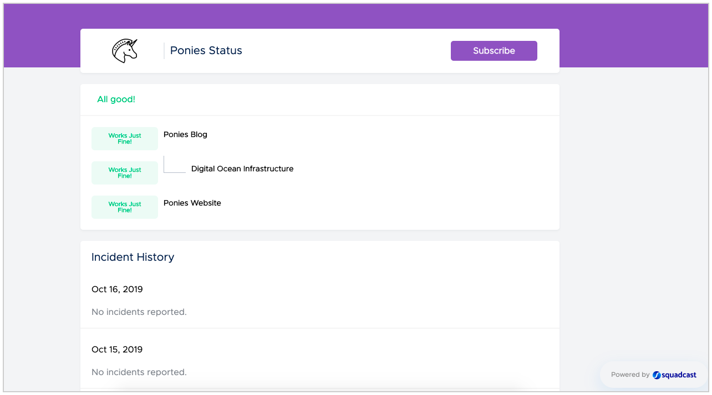
Working of a Status Page
Whenever the displayed Service has an open incident (an incident in the Triggered or Acknowledged state), its status automatically changes to the status equivalent of Degraded (Bad). When the incident gets resolved, the status of the displayed Service goes back to being Operational (Good) or its equivalent status.
For an incident, you can choose to post updates of its status directly from its Incident Details page using the Update Status Page option.
You can also display dependent Services in the Status Page. First, configure the dependencies between your Services and then, add them to the Status Page.
You can configure the visual themes and the terminologies for Operational (Good) and Degraded (Bad).
Prerequisites
-
The User Role associated with the user in the Team must have the necessary permissions to create and manage Status Pages
-
Services must be created prior to configuring a Status Page
Creating a Status Page
Ensure that the right Team is selected from the team picker at the top of the screen.
(1) Navigate to Status Page from the sidebar

(2) Click on the Add Status Page button

(3 a) Page Configuration
- Give your Status Page a Name
- Enter the Page Hostname (eg: status.yourcompany.com or www.yourcompanystatus.com) where you want to host the Status Page
- Copy the
CNAMEinformation - Click on Save & Next button

(3 b) Service Configuration
- Select the Services which you want to display in your Status Page and provide a suitable Alias for them
- You can also enable the checkbox Select all services to display your entire list of Services in your Team on the Status Page
- Click on Save & Create to create the Status Page

Note: If the selected Service is dependent on other Services, then its dependent Services will also automatically be displayed in the Status Page.

Setting CNAME record
When you try to view your Status Page by clicking on the Status Page or by visiting the Page Hostname, it will not be visible.
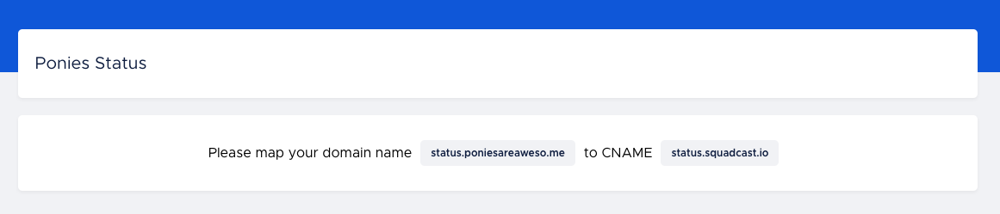
You would have to first add a CNAME record in your DNS Provider for the Page Hostname and point it to status.squadcast.io.
Note: This step is necessary for you to complete irrespective of whether you are looking to have a Public Status Page or a Private Status Page.
Note: CAA Records Setup
All our Status Pages are served via https and we use a certificate generated by Letsencrypt, so if you had setup CAA record, please add letsencrypt.org to the CAA record list, if not added already. This will prevent certificate issues for your Status Page.
Once, the CNAME record has been added successfully, you can view the Status Page by clicking on its name from the Status Page tab.

You will be able to view your Status Page like shown in the image below.

Customizing your Status Page
Update Header (Logo & Status Heading)
You can upload a Logo and change the default System Status texts by clicking on Edit and selecting Header.
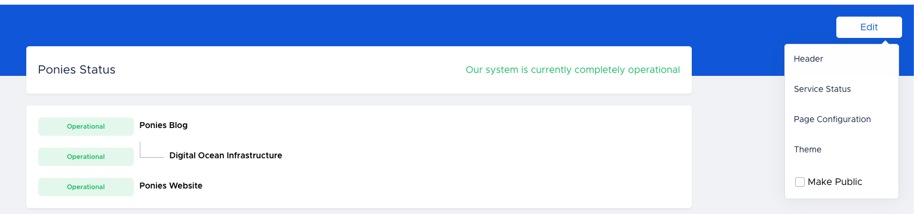
Here, you can upload a Logo for your Status Page and provide custom text for when all your displayed Services are healthy - Good Status (eg: Operational, All good!, etc.) and for when even one of your displayed Services has an incident - Bad Status (eg: Degraded, Oops.., Something is wrong, etc.)
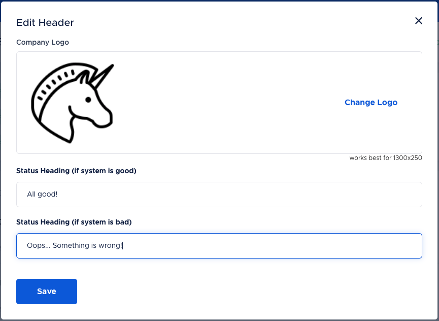
This status will update the Status Page’s overall status in the header section accordingly.
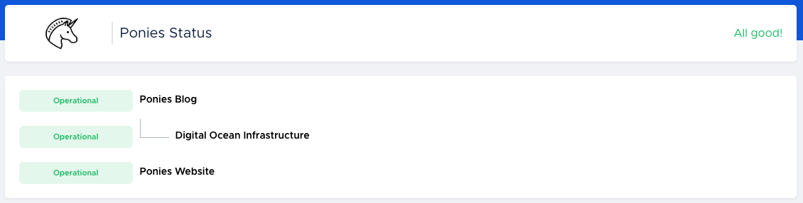
Configuring Service Status
You can also configure the Service Status text and the representation colours by clicking on Edit and selecting Service Status.
Here, you can customize the text to be displayed for the Service Status on the right, and you can edit the representation colours on the left by clicking on the colour option. You can also enter your own choice of colour by providing the HEX value for that colour.
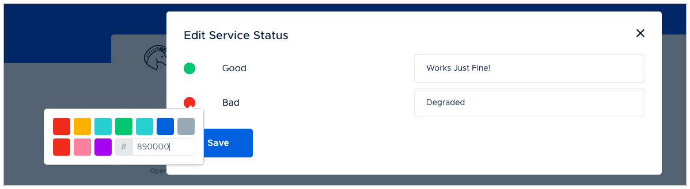
Note: You can see the changes reflecting in your screen by refreshing the screen.
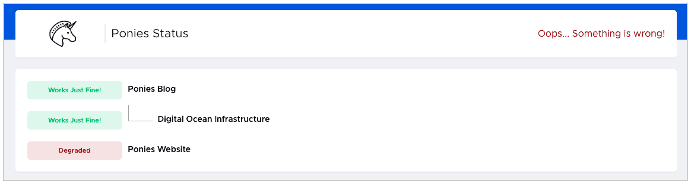
Changing the colour theme
You can edit the colour theme of your Status Page by clicking on Edit and selecting Theme.
Then you can pick the colour of your choice from the visual colour picker or provide the colour values in either HEX, RGBA or HSLA formats, and then click the Save button.
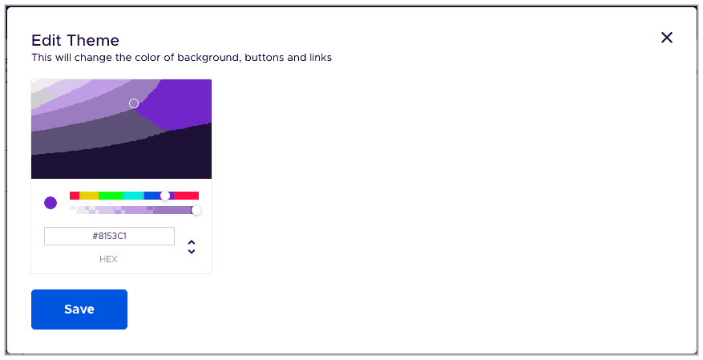
You can see the changes reflecting as shown below.
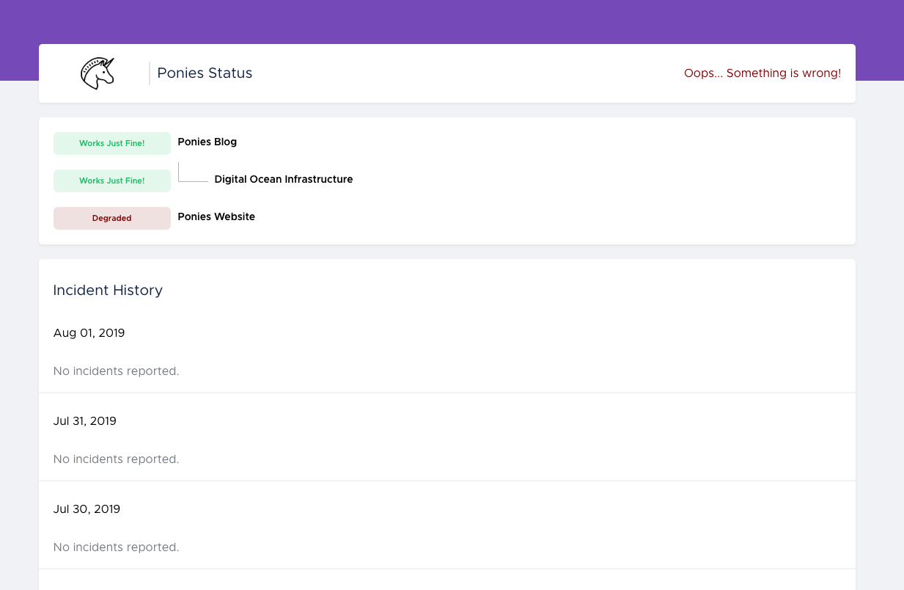
Types of Status Page
Public Status Page
Now that you are done with all the customizations, it’s time to make the Status Page public, so all your customers/stakeholders/members of other Teams in your Organization/end users can view it.
To make a Status Page public, go to Edit and check the Make Public check box as shown below.
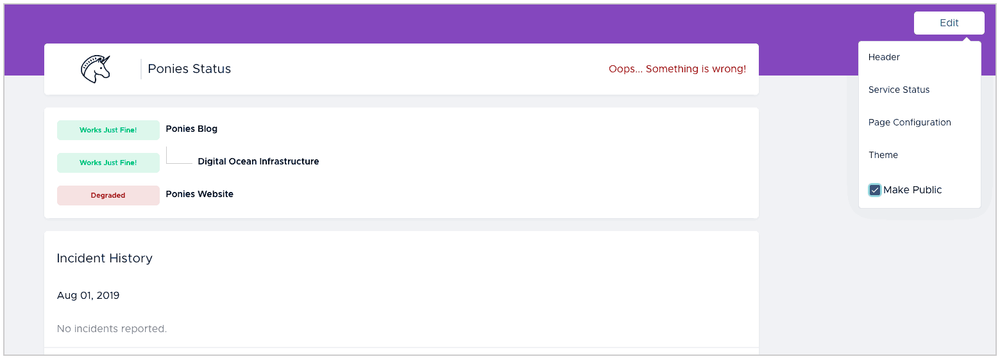
Now, anyone can publicly view the status page using the Public URL (Hostname URL), in this case, https://status.poniesareaweso.me.
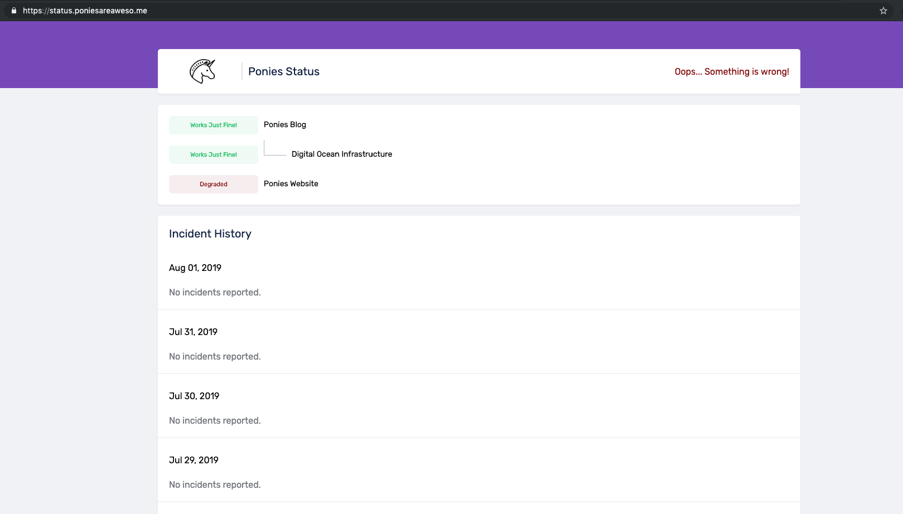
Private Status Page
If you do not check the Make Public box in the Edit dropdown, your Status Page will be Private to the members of your Team only.

Note:
- To access a Private Status Page, you can either click on the Name of the Status Page or click on the Hostname URL for the Status Page and view the Status Page.

- You can also share the Squadcast URL (indicated by the green box) of the Private Status Page with members of your Team to easily access the Status Page (with an added user login step, if they are not already logged in to Squadcast)
Whenever there is an incident for a displayed Service, that status of the Service will be marked as Degraded/Bad. You can post updates to the Status Page for the incident with different statuses.
For a first update, you can add a status such as Acknowledged, Investigating and add relevant information in the Description.
Posting Incident Updates to your Status Page
Whenever there is an incident for a displayed Service, that status of the Service will be marked as Degraded/Bad. You can post updates to the Status Page for the incident with different statuses.
For a first update, you can add a status such as Acknowledged, Investigating and add relevant information in the Description.
As the incident state progresses, you can continue to post updates for its status like Identified, Fix deployed, Resolved, etc., and accompany it with relevant Description.
In order to do this, go to the Incident Details page for the incident. Click on the three dots on the top right of the incident and click on Update Status Page.

In the Update Status Page modal, enter the Custom Status and Custom Description, select the Status Page to which you want to post the update and click on the Update button.
Note: Markdown supported
The Custom Description field in the Update Status Page modal supports Markdown formatting.
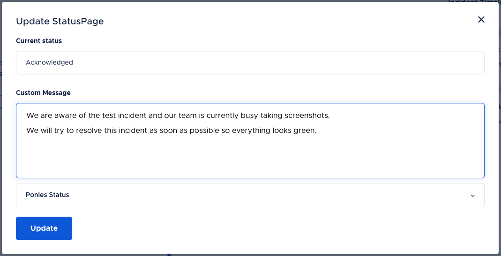
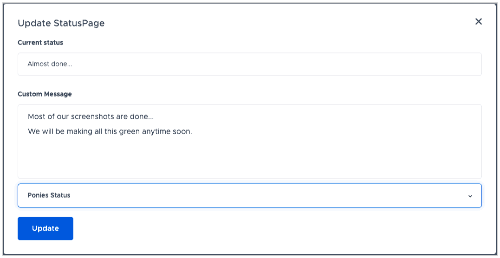
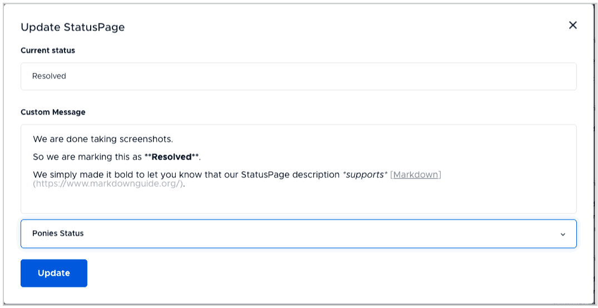
These updates will be reflected in the selected Status Page under Incident History.

Adding Attachments
You can add a variety of file types as an attachment to the Status Page update for an incident.
To attach a file, drag and drop the file to the markdown editor. You can also copy-paste the file directly in the markdown editor.
The maximum size for a single single file is 10 MB (for upload). You can upload a maximum of 5 files at a time.
The storage limit for an organization depends on the plan:
- For Free plan - the limit is 50 MB
- For Pro and Enterprise plans - the limit is unlimited
File uploads won’t work if the plan limit has been reached. File once uploaded cannot be deleted.
The supported file types are:
- Images (.png, .jpg, .jpeg)
- Word Processors (.doc, .docx, .odt, pages)
- Spreadsheets (.xls, .xlsx, numbers)
- PDFs (.pdf)
- Presentations (.ppt, .pptx. .odp)
- Miscellaneous (.log, .txt, .odv, .csv, key, json, log)
Edit Status Page Messages
You can now update the real-time statuses posted on the Status Page.
(1) Navigate to the Status Page from the sidebar
(2) Click on the Status Page you want to update

You will find the icons to edit or delete a message to the right of the message posted.
(3) Click on the Edit icon to edit the real-time status. Make the necessary changes and click on the Save button


The updated message will be reflected under Incident History.

Delete Status Page Message
(1) Click on the Delete icon on the right of the status message

(2) And click on the Delete button again to confirm

These updates will be reflected under Incident History. The deleted message will be displayed as ‘This update was deleted’.

Here is how the updated status messages look in the public Status Page.

Enable Subscriptions to your Status Page
To enable subscriptions to your Status Page, go to Edit, click on Subscriptions and check the Enable Subscriptions checkbox. Subscribe option will now show up on your public Status Page. You can have your end users subscribe for incident update notifications from the Status Page.

You can also select the modes of subscription you want to enable for your Status Page. You can select either or both the available options.
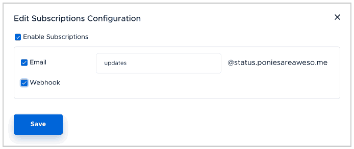
The available modes are:
1. Email:
You can add a suitable text on the sender’s email address text box from which all the subscribed users will receive Status Page incident update notifications. In this case, all the subscribed users will get mails from ‘updates@status.poniesareaweso.me’.
On the Status Page itself, you will now notice a placeholder to enter Email addresses like shown below. A confirmation/verification Email is sent to the added Email address. Post the confirmation/verification completion, incident update notifications will be sent out.

2. Webhook:
You can subscribe to receive incident update notifications via Webhooks as well. You can also enter an email address which gets notified when the endpoint fails.
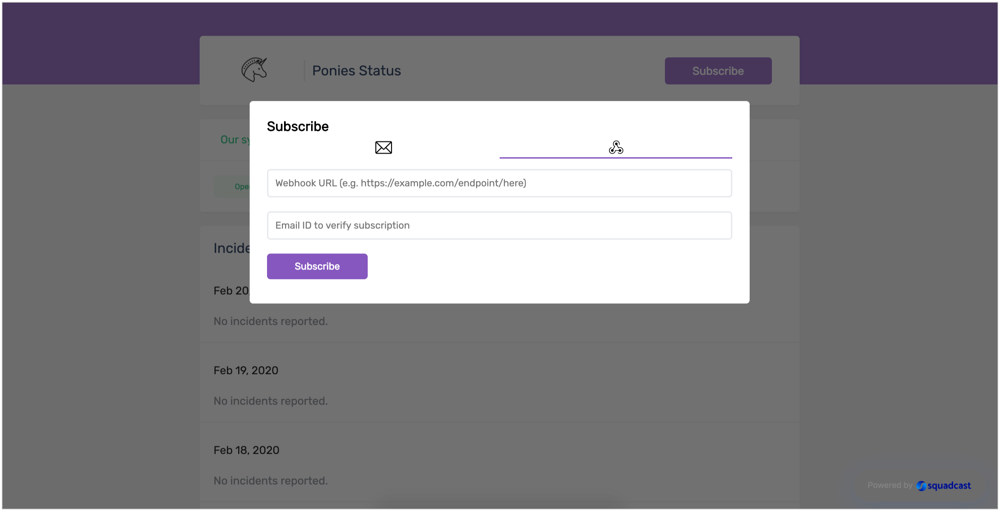
The payload format of the Webhook is as follows:
{
"metadata": {
"unsubscribe_link": "<link_to_unsubscribe_from_webhook_alerts>"
},
"page_configuration": {
"status_page_url": "<url_of_status_page_to_which_you've_subscribed>",
"status": "<the_current_status>",
"message": "<more_details_on_the_status>",
"updated_at": "<time_at_which_status_updated>"
},
"updates": [{
"status": "<status_of_corresponding_update>",
"message": "<message_corresponding_update>",
"updated_at": "<time_of_corresponding_update>"
}]
}
FAQs
Please refer to the Frequently Asked Questions below that might help you fix any issues/answer your queries.
1. I am looking to have a public Status Page, I have most likely configured everything, yet when I access the Hostname URL, the Status Page does not load. Am I missing anything?
Please ensure that you have made your Status Page Public. Without enabling this checkbox, your Status Page would be private and hence, not accessible via the Hostname URL.
2. I have confirmed that my Status Page is made Public and have added the CNAME record which is pointing to status.squadcast.io, yet I am unable to access the Status Page at the said Page Hostname
There could be various reasons for the same.
- There could be a DNS propagation delay. You might be able to access the Status Page from machines in certain regions of the world, while it would fail in the rest. In this case, it is recommended to wait for 48 hours from the time the last DNS changes were made.
- There could be a DNS caching issue at your end (For example, your router, your system’s local resolver cache, etc.). In this case, it is recommended to wait for sometime, generally a few hours, from the time the last changes were made.
If neither is applicable to you, kindly reach out to us for further assistance.
3. Even after making our Status Page public, when we try accessing the Hostname URL, we are redirected to Squadcast. What can we do to fix this?
If your Public Status Page is being redirected to your Squadcast account even after making it Public, please clear your application cache and try again. You may also additionally want to try accessing the Hostname URL from a private browsing window or another browser as well.
Should this also not work, do reach out to us for further assistance.
4. I have added a CNAME record, configured the DNS settings as per Squadcast’s steps. Yet, I receive the error “Too many redirects” while accessing the Status Page. What could be possibly causing this?
This is possibly to do with the DNS changes (addition of CNAME record) that you recently made at your DNS Provider’s end (GoDaddy, CloudFlare, DigitalOcean, etc.). Please allow sometime (this might take upto 48 hours in extreme cases) for the DNS changes to fully propagate and take effect before you can access your public Status Page via the Hostname URL. Should this also not work, do reach out to us for further assistance.
5. Accessing a Private Status Page versus a Public Status Page
Private Status Page URL A Private Status Page’s URL can be shared with the team members who have access to Squadcast (added as users of the Squadcast account). Please note that it is not the custom URL (depicted in the red box) that is entered in the page configuration. It is the URL of the page in the app itself (depicted in the green box). The custom URL is valid only for public viewers of the Status Page, that is if you choose to make the Status Page public.
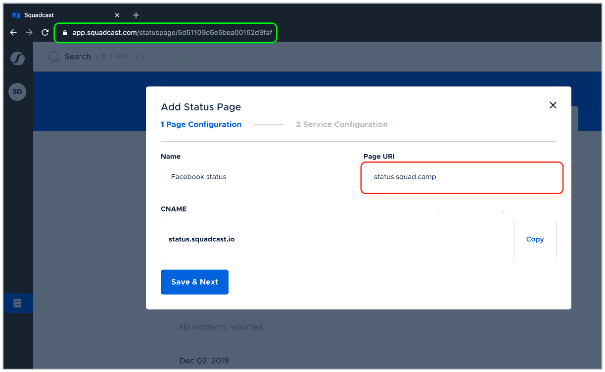
6. I have certain production Services running and I want to control the status of the Service displayed on my Status Page. Everytime the production Service has an incident, I do not want the status of that Service on my Status Page to be degraded. Is there a way for me to achieve this?
Absolutely, we understand that you may have certain non-critical incidents also affecting your Services that need not necessarily mean that your entire Service is degraded. To go about this, please follow the steps below:
- For each such Service of yours, create a duplicate Service to be displayed on the Status Page. This Service’s sole purpose is to appear on the Status Page, so you need not have to integrate this Service with your monitoring tools or route any alerts to it.
- Choose to display this duplicate Service on your Status Page instead of your original production Service. Give it an Alias.
- Every time your production Service has a severe incident/outage, you can create an incident manually for the duplicate Service and post incident updates to your Status Page for this incident.
- What this also means is, when you create the incident for this duplicate Service, its status on the Status Page will be degraded, representing the actual state at your end.
- Once your outage/incident for the production Service is
resolved, you can go ahead and resolve the incident that you previously created and post the incident update to your Status Page for the same.
7. Can I receive notifications for Status Page Updates in Slack or Microsoft Teams?
- Enable Subscriptions for your Status Page
- Obtain the Email address of the Slack or MS Teams channel where you would like to receive the notifications for Status Page updates
- Add all such Email addresses under Subscriptions -> Email and click on Subscribe

- If there is an option to do so, ensure that you have added the SMTP Endpoint for Squadcast -
incidents.squadcast.com
With this, every time there is an update posted to the Status Page for an incident, a notification for the same would appear in the Slack or MS Teams channel as well.
8. Does Squadcast provide APIs for creating and updating Status Page?
We currently do not have Public APIs for creating, managing subscriptions or updating the Status Page.
9. I have enabled Webhook subscriptions only for my Status Page. When I click on the Subscribe on my Status Page, I am asked to enter an Email address in addition to a Webhook endpoint. Why is that so?
The Email placeholder you see here is for Webhook usage confirmation/verification, not to receive incident update notifications via Email subscriptions. This Email address needs to be accessible and one must be able to verify the Email sent to this Email address in order to receive incident update notifications via the Webhook.

10. I have added a Webhook under Subscribe option and when I click on Subscribe, it throws an error - “Webhook URL returned: 400”. Why is this happening?
We send out the payloads in a particular format to the added Webhook, and most likely, the payload format we send is not being accepted by the 3rd party platform. This is why you see a Webhook URL returned: 400 error appear on the screen. In such cases, please check to see if the 3rd party platform can receive incident update notifications in the form of an Email or if you can modify the accepted payload format on their platform.
11. Is there a recommended size for the Logo image that we can upload to our Status Page Header?
Yes, it is recommended that you use an image with dimensions 1300x250 for best results.
12. Will the status of my displayed dependent Services be updated independently of the status of the parent Service?
Yes, that is correct. Only the Services that have an open incident (incident in Triggered or Acknowledged states) will be depicted as Degraded or its equivalent.

13. What is the Incident History retention/data display period by default?
You will be able to view incident updates posted to your Status Page in the last 14 days (2 weeks).
14. Can I edit the previously posted incident updates on my Status Page?
No, editing previously posted incident updates to the Status Page is not possible.
15. I want to display more information for my incident, for example, time according to my local timezone or the Incident Details. Is this possible?
Yes, absolutely! You can add any information you want to provide maximum context of the ongoing issue to your end users within the Custom Description placeholder that supports Markdown formatting as well.
16. How many Status Pages can I add in my current plan? Can I add both Private and Public Status Pages?
The number of Public Status Pages that can be added depend on the Pricing Plan that your account is currently on.
- Free Plan: 1
- Pro Plan: 5
- Enterprise Plan: Unlimited
Private Status Pages can be added only in the Pro and Enterprise Plans, not in the Free Plan.
17. Is there a limit on the number of subscribers to the Status Page? Can I view the list of subscribers to my Status Page?
No, there is no limit on the number of subscribers to your Status Page. You are also not charged for subscriptions to your Status Page.
However, you will not be able to view the list of subscribers that have subscribed to your Status Page.
18. I have an open incident in Squadcast for one of my Services from 2 days ago, however, the health of the affected Service in the Status Page went back to being healthy. Is this expected?
Typically, critical incidents are resolved by Organizations within 24 hours of them being triggered. Squadcast keeps track of only those incidents affecting the Services displayed on your Status Page that occurred in the current day. Post this duration, the health of the affected Service goes back to being healthy, since the open incident/s for it are older than 1 day.
19. Will the users get notified of the edited or deleted changes in the Status Page?
No, the users will not be notified of the changes. They will have to navigate to the Status Page to view any updates.
20. Will the time stamp change when a message is edited or deleted?
No, it will show the timestamp of the original message that was posted.